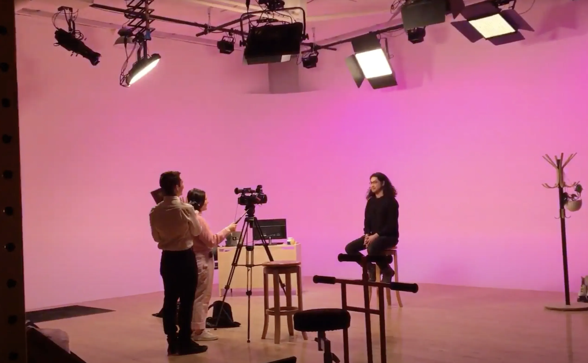
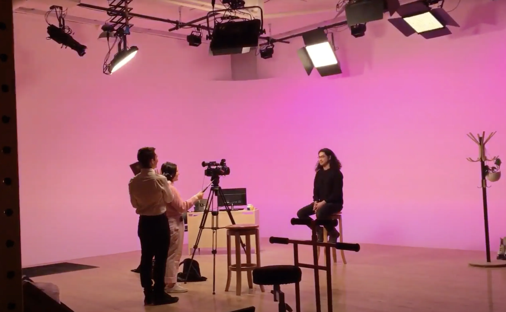

This project was created alongside Alex Penman during our 7 week residency at Laboratory Spokane. Follow @Auxillius.cord on instagram to see photos from the trip.
Our goal was to get non-experts involved in exploring and understanding Augmented Reality (AR). To this end we made an educational program called "Letters to Felix" where we make the same AR experience at 3 levels of complexity, so that everyone at home can follow along. Over the course of the episode you'll not only be exposed to the past, present, and future of the technology, but you'll also be taught the theory and skills needed to start experimenting and developing your own experiences.
The show is made in the style of old 70's and 80's educational programs, in order to be more distinct and engaging than a youtube tutorial. With the increasing influence that XR technologies such as AR and VR are having on our lives, it is important that everyone can be part of the conversation about their future.
 
